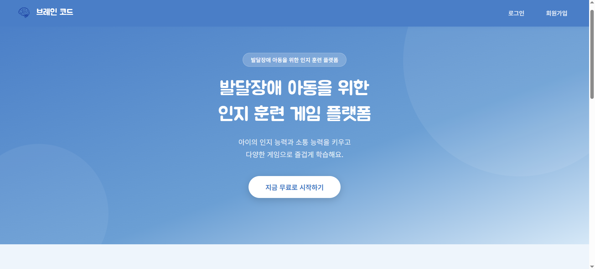
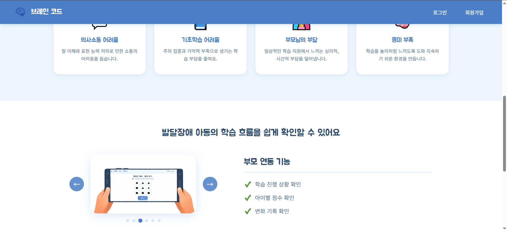
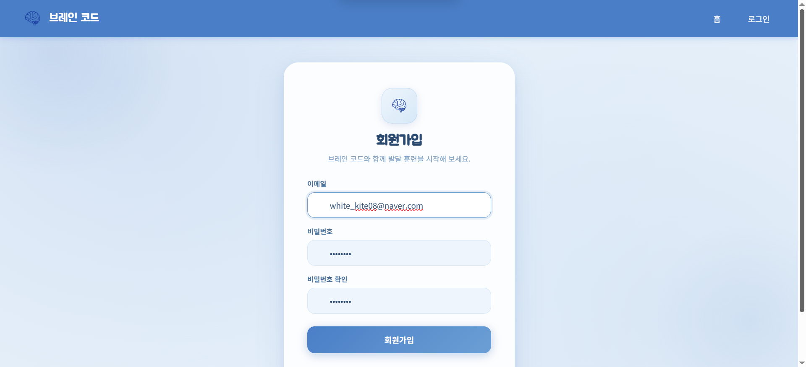
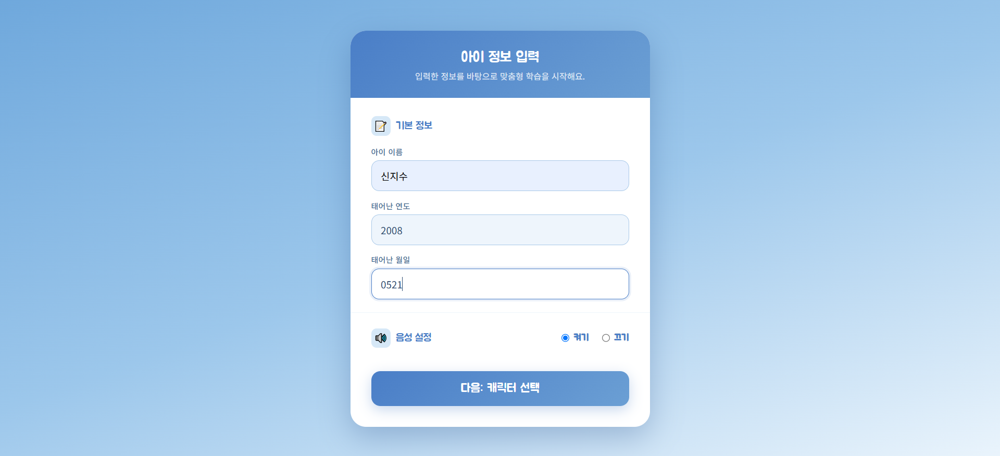
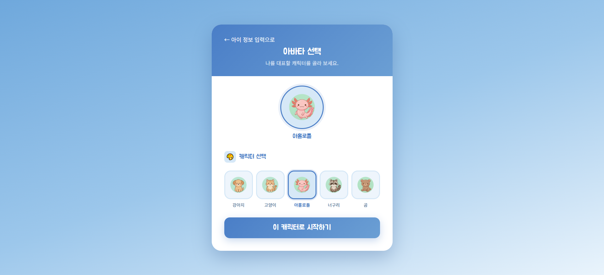
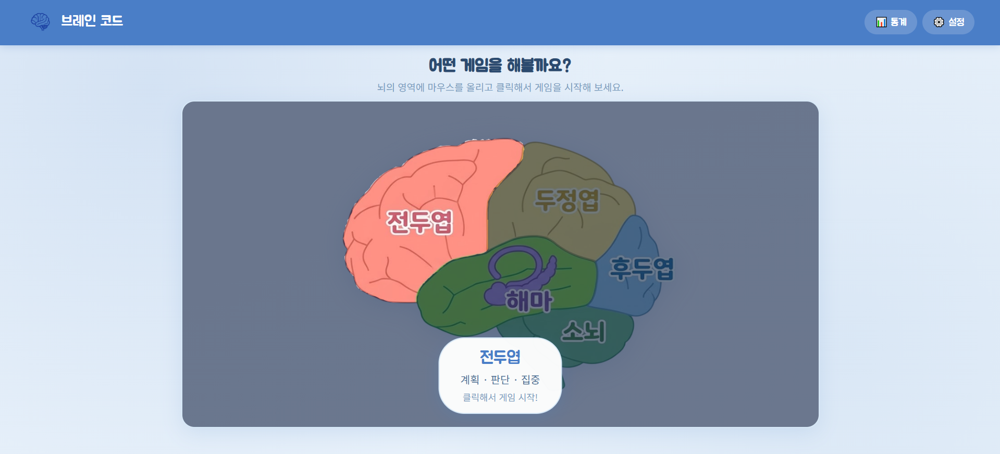
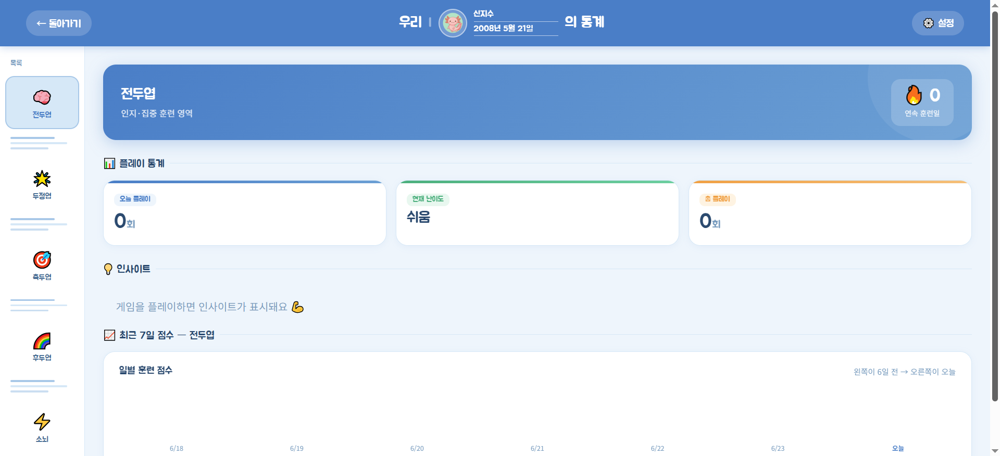

2026.04 · 공모전 · 장려상
장애 아동의 학습 보조를 위한 게임형 풀이 능력 향상 웹사이트를 팀과 함께 만들었습니다. 전체 디자인과 프론트엔드 구현을 맡아 한 달간 매일 협업하며 완성했습니다.
OVERVIEW
행복일자리운동본부가 주최한 이 대회는 선천적·후천적 장애인의 일상에 실질적으로 도움이 되는 기능을 웹이나 앱으로 구현하는 공모전이었습니다. 저희 팀은 그 중에서도 장애 아동의 학습 보조에 초점을 맞춰, 게임 형식으로 풀이 능력을 키울 수 있는 웹사이트를 주제로 잡았습니다.
단순히 문제를 푸는 사이트가 아니라, 아이들이 부담 없이 즐기면서 자연스럽게 학습으로 이어지도록 게임적인 요소를 중심에 뒀습니다.
MY ROLE
팀은 셋이었어요. 게임 기능 전체는 후배가, 백엔드는 친구가 맡았고, 저는 전체 웹사이트 디자인과 모든 페이지의 프론트엔드 구현을 담당했습니다.
디자인 방향 설정부터 각 페이지의 레이아웃 구성, 실제 마크업과 스타일링까지 전부 제 영역이었습니다. React와 Node.js를 활용해 구현했고, Claude를 적극적으로 활용하면서 모르는 부분을 빠르게 채워나갔습니다.
CHALLENGE
세 가지가 특히 힘들었습니다.
첫 번째는 회의 일정을 맞추는 것이었습니다. 같이 모이려고 해도 각자 사정이 있어서 원하는 타이밍에 다 함께 모이는 게 생각보다 잘 안 됐습니다. 진행 상황을 맞추고 싶은데 시간이 안 맞으면 그 사이에 혼자 판단해야 하는 상황이 생기고, 그게 쌓이면 방향이 어긋나는 문제로 이어졌습니다.
두 번째는 머릿속 디자인을 말로 전달하는 것이었습니다. 제가 원하는 화면이 어떤 느낌인지, 어떤 인터랙션을 원하는지가 머릿속에는 명확한데, 그걸 팀원에게 설명하려고 하면 말이 잘 안 나왔어요. "이런 느낌"이라는 말이 사람마다 다르게 들리는 걸 반복해서 겪었습니다.
세 번째는 시간 압박에 대한 걱정이었습니다. 모든 페이지의 디자인과 프론트를 혼자 맡다 보니, 기간 안에 다 끝낼 수 있을지 불안한 마음이 내내 있었습니다.
RESOLUTION
회의 문제는 매일 점심시간을 고정 회의 시간으로 정하면서 해결했습니다. 실습실을 빌려서 그날까지 각자 해온 결과물을 함께 보고, 다음 날 회의 전까지 각자 진행할 범위를 숙제처럼 정하고 약속하는 방식으로 루틴을 만들었습니다. 완벽한 회의를 한 번 하는 것보다, 짧더라도 매일 맞추는 게 훨씬 효과적이었습니다.
디자인 전달 문제는 Claude를 활용하면서 자연스럽게 풀었습니다. 원하는 결과물을 Claude에게 설명하는 과정에서 내가 원하는 게 뭔지를 스스로 더 명확하게 정리하게 됐고, 그렇게 정리된 언어로 팀원에게 설명하니 훨씬 잘 통했습니다. 말로 설명하는 능력이 프로젝트를 거치면서 실질적으로 늘었습니다.
시간 압박은 매일 회의에서 범위를 잘게 쪼개 관리하면서 버텼습니다. 전체를 한꺼번에 보면 막막하지만, 오늘 할 것만 정해두면 의외로 하루하루 나아가고 있다는 게 보였습니다.
TAKEAWAY
React와 Node.js를 실제 프로젝트에 적용하면서 각 기술이 어떤 역할을 하는지 몸으로 익혔습니다. 개념으로만 알던 것들이 실제 코드와 화면으로 연결되는 순간이 이 프로젝트에서 많았습니다.
그리고 머릿속에 있는 디자인이나 인터랙션을 말로 표현하는 게 처음엔 어려웠는데, 프로젝트가 끝날 때쯤엔 꽤 자연스럽게 전달할 수 있게 됐습니다. 개발 실력만큼이나 이 부분이 성장했다는 게 스스로도 느껴졌습니다.
SCREENS
디자인과 프론트엔드를 전담해 직접 만든 주요 화면들입니다. 장애 아동이 부담 없이 쓸 수 있도록 밝고 친근한 톤으로 일관되게 디자인했습니다.







RESULT